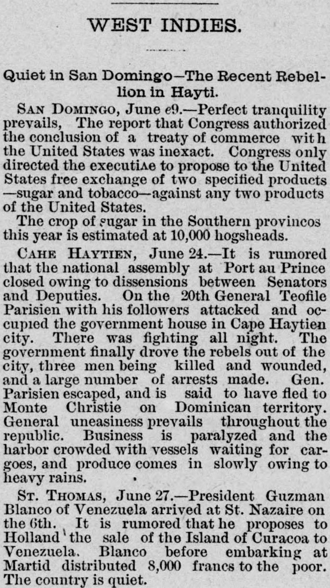
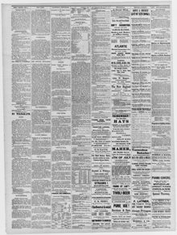

See the full pageVer la página completaCongress only directed the cxecutiAe to propose to the United StatesEl Congreso solo ordenó al ejecutivo proponer a los Estados Unidos
The newspaper reported that General Teofile Parisien and his followers attacked and occupied the government house in Cape Haytien on June 20, but were eventually driven out by the government after fighting and subsequently fled to Monte Christie on Dominican territory. Additionally, the excerpt noted that the national assembly at Port-au-Prince reportedly closed due to dissensions between Senators and Deputies, creating general uneasiness and paralyzing business amid slow produce arrivals caused by heavy rains.El diario refirió que el general Teófilo Parisien y sus secuaces asaltaron y tomaron la casa de gobierno en Cap-Haïtien el 20 de junio, pero las tropas gubernamentales los desalojaron tras encarnizada lucha, huyendo posteriormente hacia Montecristi en suelo dominicano. Asimismo, la nota indicó la clausura de la asamblea nacional en Puerto Príncipe a consecuencia de las desavenencias entre senadores y diputados, sembrando la zozobra general y paralizando el comercio ante la merma en la llegada de frutos provocada por los temporales.
FULL TEXT:TRADUCCIÓN:
WEST INDIES.INDIAS OCCIDENTALES.
Quiet in San Domingo--The Recent Rebellion in Hayti.Tranquilidad en Santo Domingo—La reciente rebelión en Haití.
SAN DOMINGO, June 29.--Perfect tranquility prevails. The report that Congress authorized the conclusion of a treaty of commerce with the United States was inexact. Congress only directed the executive to propose to the United States free exchange of two specified products--sugar and tobacco--against any two products of the United States.SANTO DOMINGO, 29 de junio.—Prevalece una tranquilidad perfecta. El informe de que el Congreso autorizó la conclusión de un tratado de comercio con los Estados Unidos era inexacto. El Congreso solo dirigió al ejecutivo a proponer a los Estados Unidos el intercambio libre de dos productos especificados—azúcar y tabaco—contra cualesquiera dos productos de los Estados Unidos.
The crop of sugar in the Southern provinces this year is estimated at 10,000 hogsheads.La cosecha de azúcar en las provincias del Sur este año se estima en 10,000 bocoyes.
CAPE HAYTIEN, June 24.--It is rumored that the national assembly at Port au Prince closed owing to dissensions between Senators and Deputies. On the 20th General Teofile Parisien with his followers attacked and occupied the government house in Cape Haytien city. There was fighting all night. The government finally drove the rebels out of the city, three men being killed and wounded, and a large number of arrests made. Gen. Parisien escaped, and is said to have fled to Monte Christie on Dominican territory. General uneasiness prevails throughout the republic. Business is paralyzed and the harbor crowded with vessels waiting for cargoes, and produce comes in slowly owing to heavy rains.CABO HAITIANO, 24 de junio.—Se rumora que la asamblea nacional en Puerto Príncipe cerró debido a disensiones entre Senadores y Diputados. El día 20 el general Teofile Parisien con sus seguidores atacó y ocupó la casa de gobierno en la ciudad de Cabo Haitiano. Hubo lucha toda la noche. El gobierno finalmente expulsó a los rebeldes de la ciudad, habiendo resultado tres hombres muertos y heridos, y se hicieron un gran número de arrestos. El general Parisien escapó, y se dice que huyó a Monte Cristi en territorio dominicano. Prevalece una inquietud general en toda la república. Los negocios están paralizados y el puerto atestado de buques esperando cargamentos, y los productos llegan lentamente debido a las fuertes lluvias.
ST. THOMAS, June 27.--President Guzman Blanco of Venezuela arrived at St. Nazaire on the 6th. It is rumored that he proposes to Holland the sale of the Island of Curacoa to Venezuela. Blanco before embarking at Martinique distributed 8,000 francs to the poor. The country is quiet.SANTO TOMÁS, 27 de junio.—El presidente Guzmán Blanco de Venezuela llegó a Saint Nazaire el día 6. Se rumora que propone a Holanda la venta de la Isla de Curacoa a Venezuela. Blanco antes de embarcar en Martinica distribuyó 8,000 francos a los pobres. El país está tranquilo.
The Portland Daily Press. Portland, Me., July 4, 1879.
See the original at the Library of CongressVer el original en la Biblioteca del Congreso
Published by: N.A. Foster & Co., 1862-1921.Publicado por: N.A. Foster & Co., 1862-1921.
Edition: Edition 1Edición: edición 1
Page: 2Página: 2
Frequency: daily (1862–1921)Frecuencia: diario (1862–1921)
Collection: Chronicling America, Library of CongressColección: Chronicling America, de la Biblioteca del Congreso
LCCN: sn83016025LCCN: sn83016025
ISSN: 2643-7597ISSN: 2643-7597
OCLC: 9338674OCLC: 9338674
Rights: public domain, according to the Library of CongressDerechos: dominio público, según la Biblioteca del Congreso